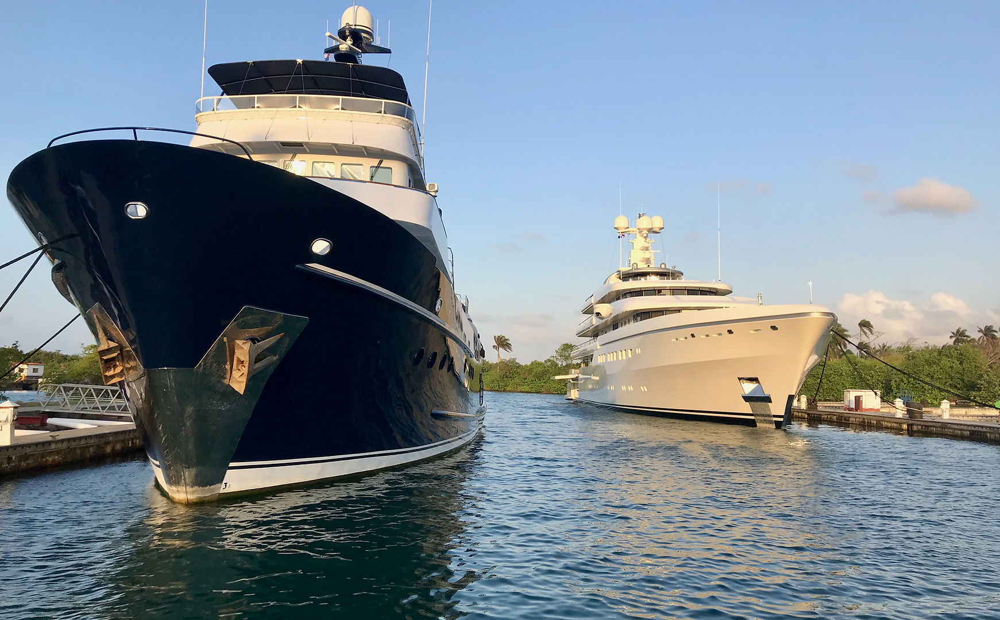
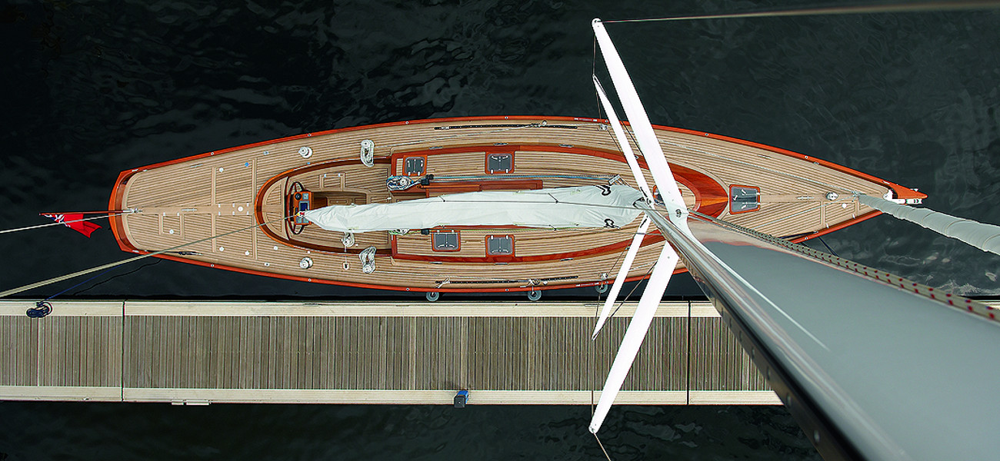

Tony GagliardoMarine Surveyor / Naval Architect
Yacht consulting
Experienced advice for buying, improving, using and maintaining your yacht.
Remote technical support · Naval architecture · Marine surveys
35 years of marine experience · 60,000 ocean miles
Start with what you need
Your boat. Your plans. A practical next step.
Considering a boat?
Bring me a candidate. Understand its suitability, survey findings and likely corrective work before deciding.
Buyer advice →Planning repairs or upgrades?
Work through equipment choices, installation proposals, estimates and priorities for your refit.
Refit & equipment advice →Have a technical problem?
Start with a focused call. If it needs measurements, research or further review, we can define a small project.
Technical consulting →Need analysis or design?
Discuss a modification, technical analysis or redesign, including approval support where the project requires it.
Naval architecture →
A practical second opinion before the next big decision.
Repowering, driveline and propeller choices. HVAC installations. Equipment upgrades and refit plans. Bring me the question, the proposal or the problem, and we can work through the next step.
Explore yacht consulting →
From a boat you’re considering to a boat you know well.
Bring me a yacht you’re thinking of buying. I can help assess its suitability, explain survey findings and prioritize improvements. After the purchase, that relationship can continue through ownership and cruising.
Buying, ownership & cruising →
Practical advice backed by experience
Naval Architecture Experience
Involved in the design of pleasure and commercial boats from 30 to 250 feet. Worked in a small three-man design team and for the largest production boat manufacturer in the world.
Diverse Building Experience
Overseen vessels constructed in wood, aluminum, steel, and composites. Worked with others on the development of machine-produced mold tooling and closed molding techniques.
Yachting Experience
35 years of experience and 60,000 ocean miles operating in the Gulf, Atlantic, Caribbean and Mediterranean waters. Have lived full-time aboard our sailing yacht since 2017.
Nomadic & Unbiased
Not rooted in any local area. Work for you, my client, and keep your best interest in mind leaving sellers brokers, yards, and vendors to take care of their own interests - the way it should be.
How I can help

A relationship that can grow with your boat
Buying. Improving. Owning. Cruising.
A single call may answer the question. More involved work can become a defined consulting or design project. Continuing support gives owners a professional way to return for advice as new decisions and problems arise.
Explore owner & cruising support →More of my marine technical work
My marine technical work on JustAnswer
View my professional profile and customer feedback, or browse examples of boat questions I’ve answered.
Both links open JustAnswer in a new tab. These are profile and archive links, not affiliate referral links.
Want to discuss your own boat?
For direct consulting, tell me what you’re working on and what you need help deciding.
Contact Tony directly